|
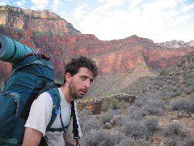
Are you talking to me? |
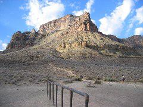
The Tipoff |
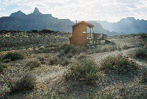
|
|
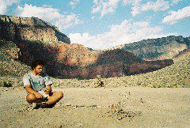
|
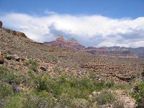
|
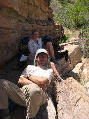
Avoiding the sun in Lonetree creek |
|
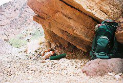
Avoiding the sun |
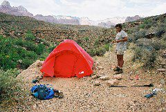
Building the tent for an inminent storm |
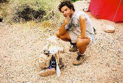
Guillermo's ingenious water-collecting contraption |
|
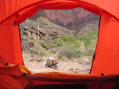
|
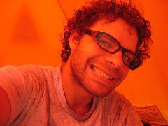
"Nåsåeren" |
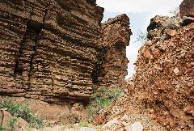
|
|
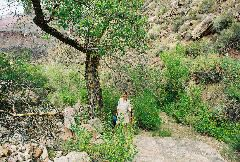
Elisabeth by the lonely cottonwood tree |
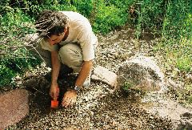
Digging for water |
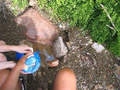
Filtering the water |
|
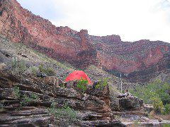
Back to the camp |
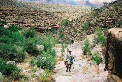
|
At 3:30am we were up and loading all our reservoirs of water, again an average of 9 liters per person. Indian Garden, directly on the Bright Angel Trail that crosses the South and North Rims, was probably the closest to an oasis on our Tonto trail trek and therefore was bustling with activity of hikers and fauna. We were happy to return, albeit early, to our solitary walking on the Tonto eastwards. At 4:45am we were already on our way with our heavy backpacks again. The Tonto is a tough trek at this point with beautiful landscapes but no shade on long stretches. The only civilized intersection to be crossed before venturing into the Eastern part of the trail is The Tipoff, junction with the South Kaibab corridor South-North trail. After passing that point, we did not see a soul for three days, until arriving at the Horseshoe Mesa area.
Crossing the dry Cremation Creek and the large plateau that separates it from our destination point on that day, Lonetree Creek, was a hard five hour hike. Upon arrival, we had consumed our full 3 liter water rations for the hike and we prepared an extra 3 liters of Gatorade to consume immediately and avoid heatstroke and headaches. We were carrying emergency water for the next day but not enough for cooking that night, so we decided to give a shot at finding water in the area. The creek around us looked incredibly dry without a single spot of shade to look for refuge for a midday nap. Crawling beneath protruding slabs of rock, we managed to find a little spot for each one of us, separated by many meters of distance, at different points of the creek to rest for a while.
"Look for a cottonwood tree, down the creek of Lonetree. You might find water there, but you might have to dig a bit," the Rangers had informed us. Digging for water was an alien concept for the three of us but we were curious. We set out to explore and managed to find the lonely tree, maybe at around 300m down the creek. Exactly at that moment, the sky was quickly covered with clouds and some drops of rain started to fall. We ran up the creek to try to gather some water to spare the digging activity which was still pretty foreign to us.
Upon arrival to our desired camp location, the wind was blowing hard and we had to secure the tent with all the rope and rocks available. In parallel, we produced a rudimentary rainwater collection system and we hoped for the raindrops to turn into massive streams of water down the creek. It did not happen. As quickly as the sky had been populated with clouds, these vanished from our sight and the prospect of getting rainwater was forgotten. We turned our eyes to our previous endeavor and went back to the location of the cottonwood tree.
At about 5m from the tree trunk, there were some humid spots on the ground, so we decided to dig a hole in the area to make a puddle of murky water maybe 10cm in depth. Using our filter and taking turns, we managed to fill three of our 3 liter deposits. At this point, filtering water with our pump had become a very hard activity since the filter was clogged with sand particles from previous creeks and especially from Lonetree.
That night was spent in celebration of our great deed of finding water under the cottonwood tree and building camp against the wind and the elements. We were pretty tired and drank without a care.
<--Previous day | Next day--> * Index